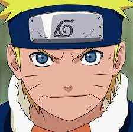
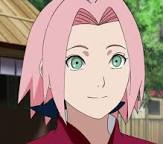
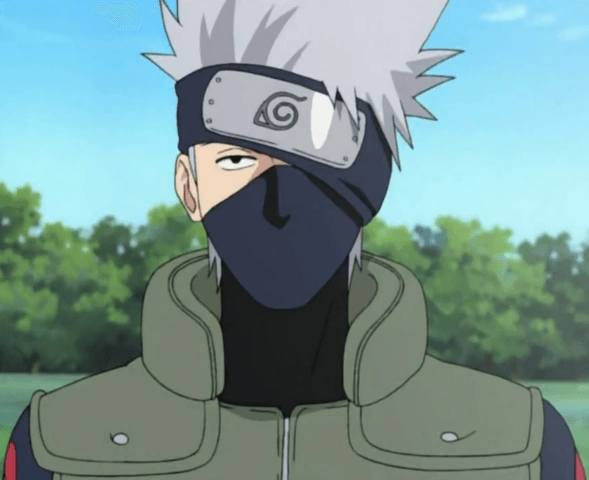

A origem de Naruto Uzumaki
Naruto é uma série de anime e mangá japonesa criada por Masashi Kishimoto. A história segue um jovem ninja chamado Naruto Uzumaki, que deseja se tornar o Hokage, líder de sua aldeia ninja, e obter reconhecimento dos outros habitantes da aldeia. No entanto, Naruto carrega uma raposa demoníaca em seu corpo, o que o torna alvo de medo e hostilidade por parte de muitos em sua aldeia. Ao longo da série, Naruto luta para superar essas adversidades e se tornar mais forte, enquanto faz amigos e enfrenta inimigos perigosos. A série é conhecida por suas cenas de ação emocionantes, personagens memoráveis e temas de amizade, perseverança e superação.
Principais personagens do Anime
Naruto Uzumaki
Principais Jutsus de Naruto Uzumaki
- Jutsu Clone das Sombras
- Jutsu de Transformação
- Rasengan
- Jutsu de Invocação
Sasuke Uchiha

Principais Jutsus de Sasuke Uchiha
- Técnica da Shuriken das Sombras
- Gensjutsu Sharingan
- Chidori
- Jutsu Bola de Fogo
Sakura Haruno
Principais Jutsus de Sakura Haruno
- Cabeçada
- Dissipação de Genjutsu
- Jutsu de Cura
Kakashi Hatake
Principais Jutsus de Kakashi Hatake
- Chidori
- Raikiri
- Sharingan
- Kamui
Naruto Clássico
Naruto Clássico é a primeira parte da série de anime e mangá Naruto, que conta a história do jovem ninja Naruto Uzumaki. A história se passa em uma aldeia ninja fictícia chamada Konoha, e segue Naruto enquanto ele treina para se tornar um ninja poderoso e obter o reconhecimento de seus colegas e superiores. No início da série, Naruto é um estudante indisciplinado que luta para controlar uma raposa demoníaca que foi selada dentro dele. Ao longo da série, Naruto faz amigos como Sasuke e Sakura, e enfrenta inimigos perigosos como Orochimaru e a organização criminosa Akatsuki. O arco final do Naruto Clássico se concentra no Exame Chunin, uma competição que coloca os jovens ninjas uns contra os outros em uma série de desafios para testar suas habilidades.
Naruto Shippuden
Naruto Shippuden é a segunda parte da série de anime e mangá Naruto, que se passa três anos após os eventos do Naruto Clássico. A história começa com Naruto retornando à Konoha após um treinamento intenso com o lendário ninja Jiraiya. Naruto agora é mais forte e maduro, e está determinado a resgatar seu amigo Sasuke, que abandonou a aldeia para buscar poder e vingança. Ao longo da série, Naruto e seus amigos enfrentam a ameaça da organização criminosa Akatsuki, que está em busca das poderosas Bestas com Caudas. Naruto também descobre a verdade sobre sua família e sobre a verdadeira natureza da raposa demoníaca que habita em seu corpo. O arco final da série se concentra na Quarta Grande Guerra Ninja, uma batalha épica entre as forças de Konoha e a organização antagonista Obito e Madara, que ameaça destruir o mundo ninja. A série é conhecida por seu enredo emocionante, cenas de ação espetaculares e temas de amizade, sacrifício e redenção.